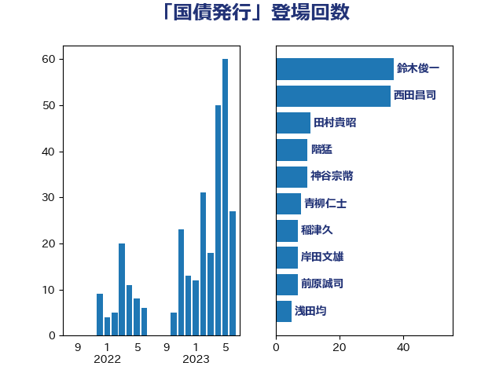

単語「国債発行」

| 麻生太郎 | 自由民主党 | 23 回 |
| 西田昌司 | 自由民主党 | 20 回 |
| 前原誠司 | 国民民主党 | 10 回 |
| 鈴木俊一 | 自由民主党 | 6 回 |
| 伊藤渉 | 公明党 | 5 回 |
| 井林辰憲 | 自由民主党 | 4 回 |
| 加藤鮎子 | 自由民主党 | 4 回 |
| 牧山ひろえ | 立憲民主党 | 4 回 |
| 階猛 | 立憲民主党 | 4 回 |
| 音喜多駿 | 日本維新の会 | 4 回 |
| 末松信介 | 自由民主党 | 3 回 |
| 熊谷裕人 | 立憲民主党 | 3 回 |
| 落合貴之 | 立憲民主党 | 3 回 |
| 野田佳彦 | 立憲民主党 | 3 回 |
| 北村経夫 | 自由民主党 | 2 回 |
| 小池晃 | 日本共産党 | 2 回 |
| 岸田文雄 | 自由民主党 | 2 回 |
| 柳ヶ瀬裕文 | 日本維新の会 | 2 回 |
| 櫻井周 | 立憲民主党 | 2 回 |
| 玉木雄一郎 | 国民民主党 | 2 回 |
| 蓮舫 | 立憲民主党 | 2 回 |
| 高市早苗 | 自由民主党 | 2 回 |
| 中川正春 | 立憲民主党 | 1 回 |
| 伊藤孝恵 | 国民民主党 | 1 回 |
| 古川元久 | 国民民主党 | 1 回 |
| 古賀之士 | 立憲民主党 | 1 回 |
| 吉田統彦 | 立憲民主党 | 1 回 |
| 大石あきこ | れいわ新選組 | 1 回 |
| 川合孝典 | 国民民主党 | 1 回 |
| 橋本岳 | 自由民主党 | 1 回 |
| 櫛渕万里 | れいわ新選組 | 1 回 |
| 津島淳 | 自由民主党 | 1 回 |
| 浅田均 | 日本維新の会 | 1 回 |
| 浜口誠 | 国民民主党 | 1 回 |
| 玄葉光一郎 | 立憲民主党 | 1 回 |
| 矢倉克夫 | 公明党 | 1 回 |
| 秋野公造 | 公明党 | 1 回 |
| 稲富修二 | 立憲民主党 | 1 回 |
| 船橋利実 | 自由民主党 | 1 回 |
| 芳賀道也 | 国民民主党 | 1 回 |
| 若宮健嗣 | 自由民主党 | 1 回 |